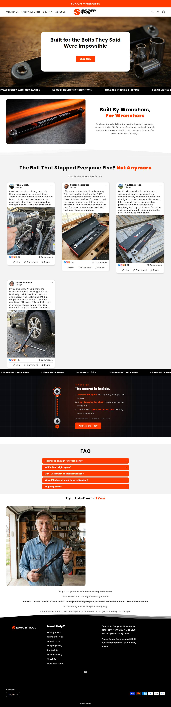
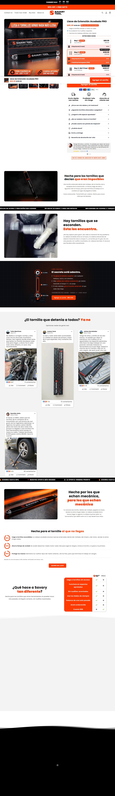

A operação mais madura em CRO. 1 mês de domínio mas já com Triple Whale, Vitals, GemPages e Shrine. Catálogo mais largo ($45–397) e escada com garantias vendidas como SKU.
Core offset extension / torque multiplier até $397. Warranties de 1–2 anos vendidas como order bump.
| Produto | Preço |
|---|---|
| Offset Extension Wrench / Llave de Extension Acodada PRO | $397 |
| Torque Multiplier Wrench | $397 |
| Savary Flameless Bolt Heater | $200 |
| Savary Chainsaw Sharpener | $90 |
| Pro Headlamp Rechargeable | $45 |
| Suspension Spreader | $45 |
| 4 Essential Socket Adapters | $20 |
| 2-Year Extended Warranty (upsell) | $30 |
| 1-Year Extended Warranty (upsell) | $20 |
Warranties vendidas como SKU (1-2 anos) = order bump explicito. Catalogo mais largo (24) com ticket ate $397. Tambem vende em espanhol.
Momentum da operação: crescendo (de Tranco + sobrevivência de criativo + idade do campeão)
Origem do tráfego: US 94.84% · UK 5.16%
Bounce 59% (mais frio) + 95% US. Ticket mais alto e catálogo mais largo = AOV maior por unidade de tráfego.
Nao expoe contagem via JSON-LD (Loox widget). Nao derivavel.


Contar anúncio diz quem ganha; isto diz por que ganha, que é o que se copia. Decodificado dos criativos e do funil coletados.
| Big idea / ângulo | Kit profissional de acesso apertado (offset + torque multiplier + bolt heater) com garantia. |
| Mecanismo único | Multi-solucao de acesso + garantia estendida como confianca. |
| Formato de hook | Oferta ('Up to 50% off') + catalogo pro multilingue (US + espanhol). |
| Estrutura do presell | Personas (John Miller, Home Garage Journal) + PDP robusta (GemPages) com garantias. |
| Objeção principal | Durabilidade/confianca, respondida com garantia estendida vendida como SKU. |
Stack mais caro e sofisticado do grupo: Triple Whale (atribuicao) + Vitals + GemPages + Shrine + Recharge. Marcador de porte e maturidade de CRO.
Operação séria de CRO num domínio novíssimo. O stack (Triple Whale + Vitals) indica quem investe pra durar. Modele a escada de garantia e o catálogo mais largo. Menos anúncios que WildBear, mas ticket maior.
| Eixo (0–2) | Pontos |
|---|---|
| Sourcing simples | 1/2 |
| Ticket fecha sem escada complexa | 1/2 |
| Criativo simples de produzir | 2/2 |
| Mecanismo com urgencia | 2/2 |
| Investimento de entrada baixo | 1/2 |
| Sem dependencia de autoridade | 1/2 |
| Total | 8/12 |
Catalogo largo (24 SKUs, ticket ate $397), escada com garantias, stack caro (Triple Whale + Vitals). Operacao de medio porte, pede operador com alguma experiencia.